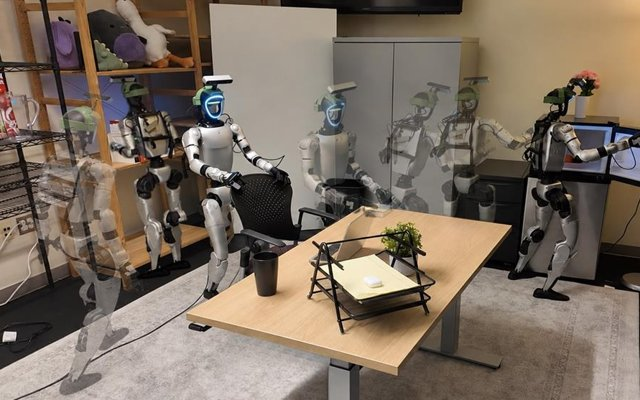

M.S. in Computer Science, Machine Learning
University of Southern California
B.S. in Statistics
University of California, Los Angeles
I am a master's student at USC working on robot learning. I work with Prof. Yue Wang in the Physical Superintelligence (PSI) Lab, where I collect humanoid teleoperation data and deploy vision-language-action policies on real robots.
My research interests include vision-language-action models, world action models, preference optimization for robot policies, and humanoid manipulation.
Before USC, I received my B.S. in Statistics from UCLA.

* equal contribution · † equal advising
Collected VR-teleoperation demonstrations on two humanoids (Unitree G1, Dexmate Vega-1) and built multi-session LeRobot datasets for training. Deployed trained VLA checkpoints on both robots through a Dockerized policy server, rehearsing every run in MuJoCo first. Wrote the asynchronous action-chunk execution and ACT-style temporal ensembling layer of the shared inference stack.
Contributed to a 3.2B-parameter VLA that predicts future visual features alongside actions, reaching 62% average success on five real-world Unitree G1 tasks, compared with 32% for π0.5 and GR00T N1.7 and 46% for Fast-WAM. Collected 455 VR-teleoperated G1 demonstrations across 10 household tasks, post-trained the model on them with a frozen VLM and 20% cross-embodiment replay, and deployed it on a single RTX 4090 at 10 Hz for real-robot evaluation.
Reworked a world action model's joint video-action denoising into a sliding-window schedule, so each replanning cycle fully denoises only the next action chunk while farther chunks keep refining. Validated in MuJoCo and on a physical Unitree G1. Part of Rolling-WAM: World Action Models with Rolling Imagination.
Designed a mixed-reference flow-matching DPO objective that adapts a SmolVLA policy to new manipulation tasks without forgetting earlier ones, raising all three LIBERO tasks above the pretrained baseline. Preference pairs came from automatic rollouts with no human labels.